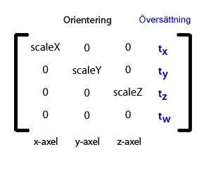

| Paket | flash.geom |
| Klass | public class Matrix3D |
| Arv | Matrix3D |
| Språkversion: | ActionScript 3.0 |
| Körningsmiljöversioner: | Flash Player 10, AIR 1.5 |
En ensam matris kan kombinera flera omformningar och tillämpa dem samtidigt på ett 3D-visningsobjekt. Till exempel kan en matris användas i 3D-koordinater för att utföra en rotation som följs av en förflyttning.
När du uttryckligen ställer in z-egenskapen eller någon av rotations- eller skalningsegenskaperna för ett visningsobjekt, skapas ett motsvarande Matrix3D-objekt automatiskt.
Du kan komma åt ett 3D-visningsobjekts Matrix3D-objekt genom egenskapen transform.matrix3d. 2D-objekt har inte något Matrix3D-objekt.
Värdet på z-egenskapen för ett 2D-objekt är noll och värdet på dess matrix3D-egenskap är null.
Obs! Om samma Matrix3D-objekt tilldelas till två olika visningsobjekt, genereras ett körningsfel.
Matrix3D-klassen använder en 4x4 fyrkantig matris: en tabell på fyra rader och kolumner med nummer som innehåller data för omformningen. De första tre raderna av matrisen innehåller data för varje 3D-axel (x,y,z). Översättningsinformation finns i den sista kolumnen. Orienterings- och skalningsinformationen finns i de tre första kolumnerna. Skalningsfaktorerna är de diagonala numren i de tre första kolumnerna. Här visas Matrix3D-elementen:

Du behöver inte förstå matrismatematik för att använda klassen Matrix3D. Den har specifika metoder som förenklar omformning och projektion, som till exempel metoderna appendTranslation(), appendRotation() och interpolateTo(). Du kan också använda metoderna decompose() och recompose() eller egenskapen rawData för att komma åt de underliggande matriselementen.
Visningsobjekt cachelagrar axelrotationsegenskaperna så att separat rotation kan skapas för varje axel, samt för att hantera de olika rotationskombinationerna. När en metod för ett Matrix3D-objekt anropas för att omforma ett visningsobjekt görs objektets rotationscache ogiltig.
Relaterade API-element
flash.geom.Transform
flash.geom.PerspectiveProjection
flash.geom.Vector3D
flash.geom.Orientation3D
flash.geom.Utils3D
flash.geom.Matrix
 Dölj ärvda publika egenskaper
Dölj ärvda publika egenskaper Visa ärvda publika egenskaper
Visa ärvda publika egenskaper| Egenskap | Definieras med | ||
|---|---|---|---|
 | constructor : Object
En referens till klassobjektet eller konstruktorfunktionen för en given objektinstans. | Object | |
| determinant : Number [skrivskyddad]
Ett nummer som avgör om matrisen går att invertera. | Matrix3D | ||
| position : Vector3D
Ett Vector3D-objekt som innehåller positionen, 3D-koordinaten (x,y,z) för ett visningsobjekt inom omformningens referensram. | Matrix3D | ||
| rawData : Vector.<Number>
En Vector med 16 siffror, där varje grupp med fyra element utgör en kolumn i en 4x4-matris. | Matrix3D | ||
| Metod | Definieras med | ||
|---|---|---|---|
Skapar ett Matrix3D-objekt. | Matrix3D | ||
Gör ett tillägg till matrisen genom att multiplicera ett annat Matrix3D-objekt med det aktuella Matrix3D-objektet. | Matrix3D | ||
Lägger till en stegvis rotation till ett Matrix3D-objekt. | Matrix3D | ||
Lägger till en stegvis skaländring, längs x-, y- och z-axeln, till ett Matrix3D-objekt. | Matrix3D | ||
Lägger till en stegvis översättning (en förflyttning längs x-, y- och z-axlarna) i ett Matrix3D-objekt. | Matrix3D | ||
Returnerar ett nytt Matrix3D-objekt som är en exakt kopia av det aktuella Matrix3D-objektet. | Matrix3D | ||
Kopierar ett Vector3D-objekt till en specifik kolumn för anropande Matrix3D-objekt. | Matrix3D | ||
Kopierar en specifik kolumn i anropande Matrix3D-objekt till Vector3D-objektet. | Matrix3D | ||
Kopierar alla matrisdata från källans Matrix3D-objekt till anropande Matrix3D-objekt. | Matrix3D | ||
Kopierar alla vektordata från källans vektorobjekt till anropande Matrix3D-objekt. | Matrix3D | ||
Kopierar alla matrisdata från det anropande Matrix3D-objektet till den tillhandahållna vektorn. | Matrix3D | ||
Kopierar ett Vector3D-objekt till en specifik rad för anropande Matrix3D-objekt. | Matrix3D | ||
Kopierar en specifik rad i anropande Matrix3D-objekt till Vector3D-objektet. | Matrix3D | ||
| Matrix3D | |||
Returnerar omformningsmatrisens översättnings-, rotations- och skalningsinställningar som en Vector av tre Vector3D-objekt. | Matrix3D | ||
Använder omformningmatrisen utan dess översättningselement för att omforma ett Vector3D-objekt från en rumskoordinat till en annan. | Matrix3D | ||
|
Anger om det finns en egenskap angiven för ett objekt. | Object | |
Konverterar den aktuella matrisen till en identitets- eller enhetsmatris. | Matrix3D | ||
[statisk]
Interpolerar översättnings-, rotations- och skalningsomformningar för en matris mot målmatrisens. | Matrix3D | ||
Interpolerar den här matrisen mot målmatrisens översättnings-, rotations- och skalningsomformningar. | Matrix3D | ||
Inverterar den aktuella matrisen. | Matrix3D | ||
|
Anger om en instans av klassen Object finns i prototypkedjan för objektet som anges som parameter. | Object | |
Roterar visningsobjektet så att det riktas mot en viss position. | Matrix3D | ||
Lägger till matrisen före, genom att multiplicera det aktuella Matrix3D-objektet med ett annat Matrix3D-objekt. | Matrix3D | ||
Lägger till en stegvis rotation före ett Matrix3D-objekt. | Matrix3D | ||
Lägger till en stegvis skaländring längs x-, y- och z-axeln före ett Matrix3D-objekt. | Matrix3D | ||
Lägger till en stegvis översättning (en förflyttning längs x-, y- och z-axeln) före ett Matrix3D-objekt. | Matrix3D | ||
|
Anger om den angivna egenskapen finns och är uppräkningsbar. | Object | |
Anger omformningsmatrisens översättnings-, rotations- och skalningsinställningar. | Matrix3D | ||
|
Anger tillgänglighet för en dynamisk egenskap för slingåtgärder. | Object | |
|
Returnerar det här objektets strängrepresentation, formaterad i enlighet med språkspecifika konventioner. | Object | |
|
Returnerar det angivna objektets strängbeteckning. | Object | |
Använder omformningmatrisen för att omforma ett Vector3D-objekt från en rumskoordinat till en annan. | Matrix3D | ||
Använder omformningsmatrisen för att omforma en vektor med siffror från ett koordinatsystem till ett annat. | Matrix3D | ||
Konverterar det aktuella Matrix3D-objektet till en matris där raderna och kolumnerna har bytt plats. | Matrix3D | ||
|
Returnerar det angivna objektets primitiva värde. | Object | |
determinant | egenskap |
determinant:Number [skrivskyddad] | Språkversion: | ActionScript 3.0 |
| Körningsmiljöversioner: | Flash Player 10, AIR 1.5 |
Ett nummer som avgör om matrisen går att invertera.
Ett Matrix3D-objekt måste gå att invertera. Med hjälp av determinant-egenskapen kan du säkerställa att Matrix3D-objektet går att invertera. Om determinanten är noll finns det ingen inverterad version av matrisen. Om till exempel en hel rad eller kolumn av matrisen är noll, eller om två rader eller kolumner är lika, är determinanten noll. Determinanten används också för att lösa ett antal ekvationer.
Endast en fyrkantsmatris, som till exempel Matrix3D-klassen, har en determinant.
Implementering
public function get determinant():NumberRelaterade API-element
position | egenskap |
position:Vector3D| Språkversion: | ActionScript 3.0 |
| Körningsmiljöversioner: | Flash Player 10, AIR 1.5 |
Ett Vector3D-objekt som innehåller positionen, 3D-koordinaten (x,y,z) för ett visningsobjekt inom omformningens referensram. Egenskapen position ger omedelbar åtkomst till översättningsvektorn för visningsobjektets matris utan att behöva ta isär eller sätta ihop matrisen.
Med egenskapen position kan du få eller ställa in översättningselementen för omformningsmatrisen.
Implementering
public function get position():Vector3D public function set position(value:Vector3D):voidRelaterade API-element
rawData | egenskap |
rawData:Vector.<Number>| Språkversion: | ActionScript 3.0 |
| Körningsmiljöversioner: | Flash Player 10, AIR 1.5 |
En Vector med 16 siffror, där varje grupp med fyra element utgör en kolumn i en 4x4-matris.
Ett undantag genereras om rawData-egenskapen är angiven i en matris som inte går att invertera. Matrix3D-objektet måste gå att invertera. Om en matris som inte går att invertera behövs skapar du en underklass till Matrix3D-objektet.
Implementering
public function get rawData():Vector.<Number> public function set rawData(value:Vector.<Number>):voidRelaterade API-element
Matrix3D | () | Konstruktor |
public function Matrix3D(v:Vector.<Number> = null)| Språkversion: | ActionScript 3.0 |
| Körningsmiljöversioner: | Flash Player 10, AIR 1.5 |
Skapar ett Matrix3D-objekt. Matrix3D-objekt kan initieras med en Vector med 16 siffror, där varje grupp med fyra element utgör en kolumn. När Matrix3D-objektet har skapats kommer du åt dess matriselement med hjälp av rawData-egenskapen.
Om ingen parameter har definierats skapar konstruktorn ett Matrix3D identitets- eller enhetsobjekt. I matris-notation har en identitetsmatris värdet ett på alla element på huvuddiagonalpositionen och värdet noll på alla övriga element. Värdet på rawData-egenskapen för en identitetsmatris är: 1,0,0,0,0,1,0,0,0,0,1,0,0,0,0,1. Identitetsmatrisens positions- eller översättningsvärde är Vector3D(0,0,0), rotationsinställningen är Vector3D(0,0,0) och skalningsvärdet är Vector3D(1,1,1).
v:Vector.<Number> (default = null) |
Relaterade API-element
append | () | metod |
public function append(lhs:Matrix3D):void| Språkversion: | ActionScript 3.0 |
| Körningsmiljöversioner: | Flash Player 10, AIR 1.5 |
Gör ett tillägg till matrisen genom att multiplicera ett annat Matrix3D-objekt med det aktuella Matrix3D-objektet. Resultatet kombinerar båda matrisomformningarna. Du kan multiplicera ett Matrix3D-objekt med många matriser. Det slutliga Matrix3D-objektet innehåller resultatet av alla omformningar.
Matrismultiplicering skiljer sig från matrisaddition. Matrismultiplicering är inte kommutativ. Med andra ord är inte A gånger B lika med B gånger A. Med append()-metoden startas multipliceringen på vänster sida, vilket innebär att Matrix3D-lhs-objektet är till vänster om multipliceringsoperatorn.
thisMatrix = lhs * thisMatrix;
Första gången append()-metoden anropas gör den en ändring i förhållande till det överordnade rummet. Flera anrop efter varandra sker relativt referensramen eller det tillagda Matrix3D-objektet.
Metoden append() ersätter den aktuella matrisen med den tillagda matrisen. Om du vill lägga till två matriser utan att ändra i den aktuella matrisen kopierar du den aktuella matrisen med hjälp av clone()-metoden och tillämpar sedan append()-metoden på kopian.
Parametrar
lhs:Matrix3D — En vänstersidig matris som multipliceras med det aktuella Matrix3D-objektet.
|
Relaterade API-element
appendRotation | () | metod |
public function appendRotation(degrees:Number, axis:Vector3D, pivotPoint:Vector3D = null):void| Språkversion: | ActionScript 3.0 |
| Körningsmiljöversioner: | Flash Player 10, AIR 1.5 |
Lägger till en stegvis rotation till ett Matrix3D-objekt. När Matrix3D-objektet har lagts till i ett visningsobjekt utför matrisen rotationen efter övriga omformningar i Matrix3D-objektet.
Visningsobjektets rotation definieras av en axel, en stegvis rotationsgrad runt axeln samt en valfri pivotpunkt för centrum för objektets rotation. Axeln kan gå i alla riktningar. De vanliga axlarna är X_AXIS (Vector3D(1,0,0)), Y_AXIS (Vector3D(0,1,0)) och Z_AXIS (Vector3D(0,0,1)). Med flygterminologi kallas rotation runt y-axeln för en gir. Rotation runt x-axeln kallas en krängning. Rotation runt z-axeln kallas en roll.
Omformningsordningen spelar också roll. En omformning som utgörs av en rotation följd av en översättning skapar en annan effekt än om översättningen följs av en rotation.
Rotationseffekten är inte absolut. Den är relativ till den aktuella positionen och orienteringen. För att göra en absolut ändring i omformningsmatrisen använder du recompose()-metoden. Metoden appendRotation() skiljer sig också från visningsobjektets axelrotationsegenskap, till exempel rotationX-egenskapen. Rotationsegenskapen utförs alltid före översättning, medan metoden appendRotation() utförs relativt till vad som redan finns i matrisen. För att säkerställa att du får en effekt som liknar visningsobjektets axelrotationsegenskap använder du prependRotation()-metoden. Den utför rotationen före övriga omformningar i matrisen.
När appendRotation()-metodens omformning används i visningsobjektets Matrix3D-objekt blir visningsobjektets cachelagrade rotationsegenskapsvärde ogiltigt.
Ett sätt att låta ett visningsobjekt rotera runt en specifik punkt relativt till dess position är att ställa in objektets översättning till den specifika punkten, låta objektet rotera med appendRotation()-metoden och sedan översätta objektet tillbaka till ursprungspositionen. I följande exempel utför 3D-visningsobjektet myObject en y-axelrotation runt koordinaten (10,10,0).
myObject.z = 1;
myObject.transform.matrix3D.appendTranslation(10,10,0);
myObject.transform.matrix3D.appendRotation(1, Vector3D.Y_AXIS);
myObject.transform.matrix3D.appendTranslation(-10,-10,0);
Parametrar
degrees:Number — Rotationsgraden.
| |
axis:Vector3D — Axeln eller rotationsriktningen. De vanliga axlarna är X_AXIS (Vector3D(1,0,0)), Y_AXIS (Vector3D(0,1,0)) och Z_AXIS (Vector3D(0,0,1)). Den här vektorn ska ha längden ett.
| |
pivotPoint:Vector3D (default = null) |
Relaterade API-element
appendScale | () | metod |
public function appendScale(xScale:Number, yScale:Number, zScale:Number):void| Språkversion: | ActionScript 3.0 |
| Körningsmiljöversioner: | Flash Player 10, AIR 1.5 |
Lägger till en stegvis skaländring, längs x-, y- och z-axeln, till ett Matrix3D-objekt. När Matrix3D-objektet har lagts till i ett visningsobjekt utför matrisen skalningsändringarna efter övriga omformningar i Matrix3D-objektet. Standardskalningsfaktor är (1.0, 1.0, 1.0).
Skalningen definieras som ett set med tre stegvisa ändringar längs de tre axlarna (x,y,z). Du kan multiplicera varje axel med ett eget nummer. När skalningsändringarna används i ett visningsobjekt ökas eller minskas objektets storlek. Genom att öka x-, y- och z-axlarnas storlek till två dubbleras objektets storlek, medan en minskning till 0,5 halverar dess storlek. För att säkerställa att skalningsomformningen bara påverkar en specifik axel sätts övriga parametrar till ett. En parameter på ett innebär att ingen skalningsförändring utförs längs den angivna axeln.
appendScale()-metoden kan användas för att ändra storlek men även för att hantera förvrängningar som till exempel att sträcka ut eller krympa ett visningsobjekt eller för att zooma in eller ut på en plats. Skalningsomformningar utförs automatiskt vid rotation och översättning av ett visningsobjekt.
Omformningsordningen spelar också roll. En omformning i form av en storleksändring som följs av en översättning skapar en annan effekt än en översättning följd av en storleksändring.
Parametrar
xScale:Number — En multiplikator som används för att skala objektet längs x-axeln.
| |
yScale:Number — En multiplikator som används för att skala objektet längs y-axeln.
| |
zScale:Number — En multiplikator som används för att skala objektet längs z-axeln.
|
Relaterade API-element
appendTranslation | () | metod |
public function appendTranslation(x:Number, y:Number, z:Number):void| Språkversion: | ActionScript 3.0 |
| Körningsmiljöversioner: | Flash Player 10, AIR 1.5 |
Lägger till en stegvis översättning (en förflyttning längs x-, y- och z-axlarna) i ett Matrix3D-objekt. När Matrix3D-objektet har lagts till i ett visningsobjekt utför matrisen översättningsändringarna efter övriga omformningar i Matrix3D-objektet.
Omformningen definieras som ett set med tre stegvisa ändringar längs de tre axlarna (x,y,z). När omformningen används i ett visningsobjekt förflyttas visningsobjektet från sin aktuella plats längs x-, y- och z-axlarna enliget parameterns specificering. För att säkerställa att översättningen bara påverkar en specifik axel sätts övriga parametrar till noll. En nollparameter innebär att ingen ändring utförs längs den angivna axeln.
Översättningsändringarna är inte absoluta. De är relativa till matrisens aktuella position och orientering. För att göra en absolut ändring i omformningsmatrisen använder du recompose()-metoden. Omformningsordningen spelar också roll. En omformning som utgörs av en översättning följd av en rotation skapar en annan effekt än om rotationen följs av en översättning.
Parametrar
x:Number — En stegvis översättning längs x-axeln.
| |
y:Number — En stegvis översättning längs y-axeln.
| |
z:Number — En stegvis översättning längs z-axeln.
|
Relaterade API-element
clone | () | metod |
public function clone():Matrix3D| Språkversion: | ActionScript 3.0 |
| Körningsmiljöversioner: | Flash Player 10, AIR 1.5 |
Returnerar ett nytt Matrix3D-objekt som är en exakt kopia av det aktuella Matrix3D-objektet.
ReturnerarMatrix3D — Ett nytt Matrix3D-objekt som är en exakt kopia av det aktuella Matrix3D-objektet.
|
copyColumnFrom | () | metod |
public function copyColumnFrom(column:uint, vector3D:Vector3D):void| Språkversion: | ActionScript 3.0 |
| Körningsmiljöversioner: | Flash Player 11, AIR 3.0, Flash Lite 4 |
Kopierar ett Vector3D-objekt till en specifik kolumn för anropande Matrix3D-objekt.
Parametrar
column:uint — Målkolumn för kopian.
| |
vector3D:Vector3D — Vector3D-objekt varifrån data kopieras.
|
copyColumnTo | () | metod |
public function copyColumnTo(column:uint, vector3D:Vector3D):void| Språkversion: | ActionScript 3.0 |
| Körningsmiljöversioner: | Flash Player 11, AIR 3.0, Flash Lite 4 |
Kopierar en specifik kolumn i anropande Matrix3D-objekt till Vector3D-objektet.
Parametrar
column:uint — Den kolumn från vilken data ska kopieras.
| |
vector3D:Vector3D — Vector3D-målobjektet för kopian.
|
copyFrom | () | metod |
public function copyFrom(sourceMatrix3D:Matrix3D):void| Språkversion: | ActionScript 3.0 |
| Körningsmiljöversioner: | Flash Player 11, AIR 3.0, Flash Lite 4 |
Kopierar alla matrisdata från källans Matrix3D-objekt till anropande Matrix3D-objekt.
Parametrar
sourceMatrix3D:Matrix3D — Matrix3D-objekt varifrån data kopieras.
|
copyRawDataFrom | () | metod |
public function copyRawDataFrom(vector:Vector.<Number>, index:uint = 0, transpose:Boolean = false):void| Språkversion: | ActionScript 3.0 |
| Körningsmiljöversioner: | Flash Player 11, AIR 3.0, Flash Lite 4 |
Kopierar alla vektordata från källans vektorobjekt till anropande Matrix3D-objekt. Den valfria indexparametern gör att du kan välja vilken startplats som helst i vektorn.
Parametrar
vector:Vector.<Number> — Vektorobjektet varifrån data kopieras.
| |
index:uint (default = 0) | |
transpose:Boolean (default = false) |
copyRawDataTo | () | metod |
public function copyRawDataTo(vector:Vector.<Number>, index:uint = 0, transpose:Boolean = false):void| Språkversion: | ActionScript 3.0 |
| Körningsmiljöversioner: | Flash Player 11, AIR 3.0, Flash Lite 4 |
Kopierar alla matrisdata från det anropande Matrix3D-objektet till den tillhandahållna vektorn. Den valfria indexparametern gör att du kan välja vilken målstartplats som helst i vektorn.
Parametrar
vector:Vector.<Number> — Vektorobjektet dit data ska kopieras.
| |
index:uint (default = 0) | |
transpose:Boolean (default = false) |
copyRowFrom | () | metod |
public function copyRowFrom(row:uint, vector3D:Vector3D):void| Språkversion: | ActionScript 3.0 |
| Körningsmiljöversioner: | Flash Player 11, AIR 3.0, Flash Lite 4 |
Kopierar ett Vector3D-objekt till en specifik rad för anropande Matrix3D-objekt.
Parametrar
row:uint — Raden dit data kopieras.
| |
vector3D:Vector3D — Vector3D-objekt varifrån data kopieras.
|
copyRowTo | () | metod |
public function copyRowTo(row:uint, vector3D:Vector3D):void| Språkversion: | ActionScript 3.0 |
| Körningsmiljöversioner: | Flash Player 11, AIR 3.0, Flash Lite 4 |
Kopierar en specifik rad i anropande Matrix3D-objekt till Vector3D-objektet.
Parametrar
row:uint — Raden varifrån data kopieras.
| |
vector3D:Vector3D — Det Vector3D-objekt till vilket data ska kopieras.
|
copyToMatrix3D | () | metod |
decompose | () | metod |
public function decompose(orientationStyle:String = "eulerAngles"):Vector.<Vector3D>| Språkversion: | ActionScript 3.0 |
| Körningsmiljöversioner: | Flash Player 10, AIR 1.5 |
Returnerar omformningsmatrisens översättnings-, rotations- och skalningsinställningar som en Vector av tre Vector3D-objekt. Det första Vector3D-objektet innehåller översättningselementen. Det andra Vector3D-objektet innehåller rotationselementen. Det tredje Vector3D-objektet innehåller skalningselementen.
Vissa Matrix3D-metoder, till exempel interpolateTo()-metoden delar automatisk upp och sätter ihop matrisen för att utföra omformningen.
För att ändra i matrisens omformning med en absolut överordnad referensram hämtar du inställningarna med decompose()-metoden och gör önskade ändringar. Sedan kan du ange Matrix3D-objektet till den ändrade omformningen med hjälp av recompose()-metoden.
decompose()-metodens parameter specificerar orienteringstypen som ska användas för omformningen. Standardorientering är eulerAngles som definierar orienteringen med tre separata rotationsvinklar för varje axel. Rotationerna görs efter varandra och förändrar inte varandras axlar. Visningsobjektets axelrotationsegenskaper utför omformning enligt orienteringstypen Euler-vinklar. Övriga orienteringstypsalternativ är axisAngle och quaternion. Axel-vinkel-orienteringen använder en kombination av en axel och en vinkel för att avgöra orienteringen. Den axel som objektet roterar runt är en enhetsvektor som anger riktningen. Vinkeln representerar storleken på rotationen runt vektorn. Riktningen avgör också åt vilket håll visningsobjekt är riktat, och vinkeln avgör vilket håll som är upp. Metoderna appendRotation() och prependRotation() använder axel-vinkel-orienteringen. Kvaternion-orienteringen använder komplexa nummer och det fjärde elementet i en vektor. De tre rotationsaxlarna (x,y,z) och en vinkelrotation (w) utgör orienteringen. interpolate()-metoden använder kvaternion.
Parametrar
orientationStyle:String (default = "eulerAngles")eulerAngles (constant EULER_ANGLES), axisAngle (constant AXIS_ANGLE) och quaternion (constant QUATERNION). Mer information om de olika orienteringstyperna finns i geom.Orientation3D-klassen.
|
Vector.<Vector3D> — En Vector med tre Vector3D-objekt som vart och ett innehåller översättnings-, rotations- och skalningsinställningar.
|
Relaterade API-element
Exempel ( Så här använder du exemplet )
decompose() och recompose() för att få en ellips att sträckas horisontellt samtidigt som den förflyttas mot försvinningspunkten. Det första Vector3D-objektet som returneras av decompose()-metoden innehåller översättningskoordinaterna. Det tredje Vector3D-objektet innehåller skalningsinställningarna. Vector3D-objektets incrementBy()-metod ökar stegvis matrisens absoluta översättnings- och skalningsinställningar.
package {
import flash.display.MovieClip;
import flash.display.Shape;
import flash.geom.*;
import flash.events.Event;
public class Matrix3DdecomposeExample extends MovieClip {
private var ellipse:Shape = new Shape();
public function Matrix3DdecomposeExample():void {
ellipse.x = (this.stage.stageWidth / 2);
ellipse.y = (this.stage.stageHeight - 40);
ellipse.z = 1;
ellipse.graphics.beginFill(0xFF0000);
ellipse.graphics.lineStyle(2);
ellipse.graphics.drawEllipse(0, 0, 50, 40);
ellipse.graphics.endFill();
addChild(ellipse);
ellipse.addEventListener(Event.ENTER_FRAME, enterFrameHandler);
}
private function enterFrameHandler(e:Event):void {
var v3:Vector.<Vector3D> = new Vector.<Vector3D>(3);
v3 = ellipse.transform.matrix3D.decompose();
v3[0].incrementBy(new Vector3D(0,0,1));
v3[2].incrementBy(new Vector3D(0.01,0,0));
ellipse.transform.matrix3D.recompose(v3);
}
}
}
deltaTransformVector | () | metod |
public function deltaTransformVector(v:Vector3D):Vector3D| Språkversion: | ActionScript 3.0 |
| Körningsmiljöversioner: | Flash Player 10, AIR 1.5 |
Använder omformningmatrisen utan dess översättningselement för att omforma ett Vector3D-objekt från en rumskoordinat till en annan. Det returnerade Vector3D-objektet innehåller de nya koordinaterna efter att rotations- och skalningsomformningarna har tillämpats. Om deltaTransformVector()-metoden lägger till en matris som endast innehåller översättningsomformning är det Vector3D-objekt som returneras identiskt med ursprungsobjektet.
Använd deltaTransformVector()-metoden för att få ett visningsobjekt i ett koordinatrum att svara på rotationsomformningen för ett annat visningsobjekt. Objektet kopierar inte rotationen, utan ändrar endast sin position för att reflektera ändringar i rotationen. För att till exempel använda display.Graphics-API:t för att rita ett roterande 3D-visningsobjekt, måste du mappa objektets rotationskoordinater till en 2D-punkt. Först hämtar du objektets 3D-koordinater efter varje rotation, med hjälp av metoden deltaTransformVector(). Sedan använder du visningsobjektets local3DToGlobal()-metod för att översätta 3D-koordinaterna till 2D-punkter. Du kan sedan använda 2D-punkterna för att rita det roterande 3D-objektet.
Obs! Den här metoden anger automatiskt w-komponenten för skickad Vector3D som 0.0.
Parametrar
v:Vector3D — Ett Vector3D-objekt, som innehåller de koordinater som ska omformas.
|
Vector3D — Ett Vector3D-objekt med de omformade koordinaterna.
|
Relaterade API-element
identity | () | metod |
public function identity():void| Språkversion: | ActionScript 3.0 |
| Körningsmiljöversioner: | Flash Player 10, AIR 1.5 |
Konverterar den aktuella matrisen till en identitets- eller enhetsmatris. En identitetsmatris har värdet ett för elementen på huvuddiagonalen och värdet noll för alla andra element. Resultatet är en matris där rawData-värdet är 1,0,0,0,0,1,0,0,0,0,1,0,0,0,0,1 och rotationsinställningen har angetts till Vector3D(0,0,0). Positions- eller översättninginställningen är angiven till Vector3D(0,0,0) och skalningsvärdet är angett till Vector3D(1,1,1). Här visas en identitetsmatris.

Ett objekt som har omformats genom att en identitetsmatris har lagts till utför ingen omformning. Med andra ord, om en matris multipliceras med en identitetsmatris resulterar det i en matris som är samma som (identisk med) ursprungsmatrisen.
interpolate | () | metod |
public static function interpolate(thisMat:Matrix3D, toMat:Matrix3D, percent:Number):Matrix3D| Språkversion: | ActionScript 3.0 |
| Körningsmiljöversioner: | Flash Player 10, AIR 1.5 |
Interpolerar översättnings-, rotations- och skalningsomformningar för en matris mot målmatrisens.
interpolate()-metoden undviker några av de oönskade resultat som kan inträffa när metoder som till exempel visningsobjektets axelrotationsegenskaper används. interpolate()-metoden gör det cachelagrade värdet på rotationsegenskapen ogiltigt och konverterar orienteringselementen för visningsobjektens matris till en kvaternion före interpoleringen. Den här metoden garanterar den kortaste, mest effektiva banan för rotationen. Den skapar också en jämn rotation utan gimbal lock. Ett gimbal lock kan inträffa när Euler-vinklar används, där varje axel hanteras individuellt. Vid rotation runt två eller fler axlar kan axlarna råka gå ihop, vilket kan ge oväntade resultat. Med kvaternion-rotation undviks gimbal lock.
Flera anrop efter varandra till interpolate()-metoden kan skapa en effekt av ett visningsobjekt som snabbt startar och sedan långsamt närmar sig ett annat visningsobjekt. Om du till exempel anger thisMat-parametern till det returnerade Matrix3D-objektet, anger toMat-parametern till målvisningsobjektets associerade Matrix3D-objekt, och percent-parametern till 0,1, kommer visningsobjektet att flyttas 10 procent mot målobjektet. Vid efterföljande anrop eller ramar flyttas objektet 10 procent av de återstående 90 procenten, sedan 10 procent av det återstående avståndet och fortsätter tills målet nås.
Parametrar
thisMat:Matrix3D — Matrix3D-objektet måste interpoleras.
| |
toMat:Matrix3D — Matrix3D-objektet som är målet.
| |
percent:Number — Ett värde mellan 0 och 1 som avgör hur många procent Matrix3D thisMat-objektet ska interpoleras mot Matrix3D-objektet som är målet.
|
Matrix3D — Ett Matrix3D-objekt med element som placerar matrisens värde mellan den ursprungliga matrisen och målmatrisen. När den returnerade matrisen används i this-visningsobjektet flyttas objektet den angivna procenten närmare målobjektet.
|
Relaterade API-element
interpolateTo | () | metod |
public function interpolateTo(toMat:Matrix3D, percent:Number):void| Språkversion: | ActionScript 3.0 |
| Körningsmiljöversioner: | Flash Player 10, AIR 1.5 |
Interpolerar den här matrisen mot målmatrisens översättnings-, rotations- och skalningsomformningar.
Med interpolateTo()-metoden undviker du de oönskade resultaten som kan inträffa när metoder som till exempel visningsobjektets axelrotationsegenskaper används. interpolateTo()-metoden gör det cachelagrade värdet på rotationsegenskapen ogiltigt och konverterar orienteringselementen för visningsobjektens matris till en kvaternion före interpoleringen. Den här metoden garanterar den kortaste, mest effektiva banan för rotationen. Den skapar också en jämn rotation utan gimbal lock. Ett gimbal lock kan inträffa när Euler-vinklar används, där varje axel hanteras individuellt. Vid rotation runt två eller fler axlar kan axlarna råka gå ihop, vilket kan ge oväntade resultat. Med kvaternion-rotation undviks gimbal lock.
Obs! Vid interpolation återställs skalningsvärdet i matrisen och matrisen normaliseras.
Med flera anrop efter varandra till interpolateTo()-metoden kan skapa en effekt av ett visningsobjekt som startar snabbt och sedan långsamt närmar sig ett annat visningsobjekt. Om till exempel procentparametern sätts till 0,1 flyttas visningsobjektet 10 procent mot målobjektet som har angetts av toMat-parametern. Vid efterföljande anrop eller ramar flyttas objektet 10 procent av de återstående 90 procenten, sedan 10 procent av det återstående avståndet och fortsätter tills målet nås.
Parametrar
toMat:Matrix3D — Matrix3D-objektet som är målet.
| |
percent:Number — Ett värde mellan 0 och 1 som bestämmer visningsobjektets position i förhållande till målet. Ju närmare 1,0 värdet är, desto närmare är visningsobjektet den nuvarande positionen. Ju närmare 0 värdet är, desto närmare målet är visningsobjektet.
|
Relaterade API-element
Exempel ( Så här använder du exemplet )
ellipse2, ett tredimensionellt visningsobjekt mot ellipse1 som är ett annat tredimensionellt objekt. ellipse2 följer efter ellipse1 och försöker komma i fatt. Om ellipse1 inte roterar runt sin y-axel kommer ellipse2 att hinna upp och landa på ellipse1. De två ellipserna dras i samma riktning men placeras i olika tredimensionella omgivningsrum.
package {
import flash.display.MovieClip;
import flash.display.Shape;
import flash.display.Graphics;
import flash.geom.*;
import flash.events.Event;
public class InterpolateToExample extends MovieClip {
private var ellipse1:Shape = new Shape();
private var ellipse2:Shape = new Shape();
public function InterpolateToExample():void {
ellipse1 = myEllipses(250, 100, 500, 0xFF0000);
addChild(ellipse1);
ellipse2 = myEllipses(-30, 120, 1, 0x00FF00);
addChild(ellipse2);
addEventListener(Event.ENTER_FRAME, enterFrameHandler);
}
private function myEllipses(x:Number, y:Number, z:Number, c:Number):Shape {
var s:Shape = new Shape();
s.x = x;
s.y = y;
s.z = z;
s.graphics.beginFill(c);
s.graphics.lineStyle(2);
s.graphics.drawEllipse(100, 50, 100, 80);
s.graphics.endFill();
return s;
}
private function enterFrameHandler(e:Event) {
ellipse1.rotationY += 1;
ellipse2.transform.matrix3D.interpolateTo(ellipse1.transform.matrix3D, 0.1);
}
}
}
invert | () | metod |
public function invert():Boolean| Språkversion: | ActionScript 3.0 |
| Körningsmiljöversioner: | Flash Player 10, AIR 1.5 |
Inverterar den aktuella matrisen. En inverterad matris har samma storlek som den ursprungliga men utför motsatt omformning jämfört med originalmatrisen. Om till exempel originalmatrisen får ett objekt att rotera runt x-axeln i en riktning får den inverterade matrisen objektet att rotera runt axeln i motsatt riktning. Genom att en inverterad matris läggs till ett objekt ångras omformningen som utfördes av originalmatrisen. Om en matris multipliceras med motsvarande inverterade matris blir resultatet en identitetsmatris.
En inverterad matris kan användas för att dividera en matris med en annan. Du dividerar matris A med matris B genom att multiplicera matris A med den inverterade matris B. En inverterad matris kan även användas med ett kamerarum. När kameran flyttas i omgivningsrummet måste objektet i omgivningen förflyttas i motsatt riktning för att omformas från omgivningsvyn till kamera-eller vypunktsrummet Om kameran till exempel flyttas närmare blir objekten större. Med andra ord: om kameran förflyttas utför omgivningens z-axel, förflyttas objektet uppför omgivnings-z-axeln.
Metoden invert() ersätter den aktuella matrisen med en inverterad matris. Om du vill invertera en matris utan att ändra i den aktuella matrisen, kopierar du först den aktuella matrisen med hjälp av clone()-metoden och använder sedan invert()-metoden på kopian.
Matrix3D-objektet måste gå att invertera.
ReturnerarBoolean — Returnerar true om matrisen inverterades.
|
Relaterade API-element
pointAt | () | metod |
public function pointAt(pos:Vector3D, at:Vector3D = null, up:Vector3D = null):void| Språkversion: | ActionScript 3.0 |
| Körningsmiljöversioner: | Flash Player 10, AIR 1.5 |
Roterar visningsobjektet så att det riktas mot en viss position. Metoden tillåter ändringar i orienteringen på plats. Visningsobjektets vektor som är riktad framåt (Vector3D-objektet at) är riktad mot den angivna omgivningsrelativa positionen. Visningsobjektets riktning ”upp” anges med up-Vector3D-objektet.
Med metoden pointAt() görs visningsobjektets cachelagrade rotationsegenskapsvärde ogiltigt. Metoden delar upp visningsobjektets matris och gör ändringar i rotationselementen så att objektet kan vridas mot den angivna positionen. Sedan sätter den ihop (uppdaterar) visningsobjektets matris igen, vilket utför omformningen. Om objektet pekar mot ett rörligt mål, till exempel ett rörligt objekts position, kan metoden med hjälp av flera anrop efter varandra göra så att objektet roterar mot det rörliga målet.
Obs! Om du använder metoden Matrix3D.pointAt() utan att ange de valfria parametrarna, får ett målobjekt inte den angivna relativa positionen som standard. Du måste ange värden för at för -y-axeln (0,-1,0) och up för -z-axeln (0,0,-1).
Parametrar
pos:Vector3D — Målobjektets position i förhållande till omgivningen. ”Omgivningsrelaterat” definierar omformningen av objektet relativt omgivningens rumskoordinater där alla objekt har positionerats.
| |
at:Vector3D (default = null) | |
up:Vector3D (default = null) |
Relaterade API-element
Exempel ( Så här använder du exemplet )
pointAt() för att se deras effekt på triangelns rörelse.
package {
import flash.display.MovieClip;
import flash.display.Shape;
import flash.display.Graphics;
import flash.geom.*;
import flash.events.Event;
public class PointAtExample extends MovieClip {
private var ellipse:Shape = new Shape();
private var triangle:Shape = new Shape();
public function PointAtExample():void {
ellipse.graphics.beginFill(0xFF0000);
ellipse.graphics.lineStyle(2);
ellipse.graphics.drawEllipse(30, 40, 50, 40);
ellipse.graphics.endFill();
ellipse.x = 100;
ellipse.y = 150;
ellipse.z = 1;
triangle.graphics.beginFill(0x0000FF);
triangle.graphics.moveTo(0, 0);
triangle.graphics.lineTo(40, 40);
triangle.graphics.lineTo(80, 0);
triangle.graphics.lineTo(0, 0);
triangle.graphics.endFill();
triangle.x = 200;
triangle.y = 50;
triangle.z = 1;
addChild(ellipse);
addChild(triangle);
ellipse.addEventListener(Event.ENTER_FRAME, ellipseEnterFrameHandler);
triangle.addEventListener(Event.ENTER_FRAME, triangleEnterFrameHandler);
}
private function ellipseEnterFrameHandler(e:Event) {
if(e.target.y > 0) {
e.target.y -= 1;
e.target.x -= 1;
}
}
private function triangleEnterFrameHandler(e:Event) {
e.target.transform.matrix3D.pointAt(ellipse.transform.matrix3D.position,
Vector3D.X_AXIS, Vector3D.Y_AXIS);
}
}
}
prepend | () | metod |
public function prepend(rhs:Matrix3D):void| Språkversion: | ActionScript 3.0 |
| Körningsmiljöversioner: | Flash Player 10, AIR 1.5 |
Lägger till matrisen före, genom att multiplicera det aktuella Matrix3D-objektet med ett annat Matrix3D-objekt. Resultatet kombinerar båda matrisomformningarna.
Matrismultiplicering skiljer sig från matrisaddition. Matrismultiplicering är inte kommutativ. Med andra ord är inte A gånger B lika med B gånger A. Med prepend()-metoden sker multipliceringen från höger sida, vilket innebär att Matrix3D rhs-objektet är till höger om multipliceringsoperatorn.
thisMatrix = thisMatrix * rhs
Ändringarna som har gjorts med prepend()-metoden är objekts- och rumsrelativa. Med andra ord är de alltid relativa till objektets initiala referensram.
Metoden prepend() ersätter den aktuella matrisen med matrisen som har lagts till före. Om du vill lägga till två matriser före, utan att ändra i den aktuella matrisen, kopierar du den aktuella matrisen med clone()-metoden och använder sedan prepend()-metoden på kopian.
Parametrar
rhs:Matrix3D — Högersidan av matrisen som det aktuella Matrix3D-objektet multipliceras med.
|
Relaterade API-element
prependRotation | () | metod |
public function prependRotation(degrees:Number, axis:Vector3D, pivotPoint:Vector3D = null):void| Språkversion: | ActionScript 3.0 |
| Körningsmiljöversioner: | Flash Player 10, AIR 1.5 |
Lägger till en stegvis rotation före ett Matrix3D-objekt. När Matrix3D-objektet har lagts till i ett visningsobjekt utför matrisen rotationen före övriga omformningar i Matrix3D-objektet.
Visningsobjektets rotation definieras av en axel, en stegvis rotationsgrad runt axeln samt en valfri pivotpunkt för centrum för objektets rotation. Axeln kan gå i alla riktningar. De vanliga axlarna är X_AXIS (Vector3D(1,0,0)), Y_AXIS (Vector3D(0,1,0)) och Z_AXIS (Vector3D(0,0,1)). Med flygterminologi kallas rotation runt y-axeln för en gir. Rotation runt x-axeln kallas en krängning. Rotation runt z-axeln kallas en roll.
Omformningsordningen spelar också roll. En omformning i form av en rotation följd av en översättning skapar en annan effekt än en översättning följd av en rotation.
Rotationseffekten är inte absolut. Effekten är objektrelativ, relativ till referensramen för originalpositionen och originalorienteringen. För att göra en absolut ändring i omformningen använder du recompose()-metoden.
När prependRotation()-metodens omformning används i visningsobjektets Matrix3D-objekt blir visningsobjektets cachelagrade rotationsegenskapsvärden ogiltiga.
Ett sätt att låta ett visningsobjekt rotera runt en specifik punkt relativt till dess position är att ställa in objektets förflyttning till den specifika punkten, låta objektet rotera med prependRotation()-metoden och sedan förflytta objektet tillbaka till ursprungspositionen. I följande exempel utför 3D-visningsobjektet myObject en y-axelrotation runt koordinaten (10,10,0).
myObject.z = 1;
myObject.transform.matrix3D.prependTranslation(10,10,0);
myObject.transform.matrix3D.prependRotation(1, Vector3D.Y_AXIS);
myObject.transform.matrix3D.prependTranslation(-10,-10,0);
Parametrar
degrees:Number — Rotationsgraden.
| |
axis:Vector3D — Axeln eller rotationsriktningen. De vanliga axlarna är X_AXIS (Vector3D(1,0,0)), Y_AXIS (Vector3D(0,1,0)) och Z_AXIS (Vector3D(0,0,1)). Den här vektorn ska ha längden ett.
| |
pivotPoint:Vector3D (default = null) |
Relaterade API-element
Exempel ( Så här använder du exemplet )
package {
import flash.display.MovieClip;
import flash.display.Shape;
import flash.geom.*;
import flash.events.MouseEvent;
public class Matrix3DprependRotationExample extends MovieClip {
private var ellipse:Shape = new Shape();
public function Matrix3DprependRotationExample():void {
ellipse.graphics.beginFill(0xFF0000);
ellipse.graphics.lineStyle(2);
ellipse.graphics.drawEllipse(-50, -40, 100, 80);
ellipse.graphics.endFill();
ellipse.x = (this.stage.stageWidth / 2);
ellipse.y = (this.stage.stageHeight / 2);
ellipse.z = 1;
addChild(ellipse);
stage.addEventListener(MouseEvent.MOUSE_MOVE, mouseMoveHandler);
}
private function mouseMoveHandler(e:MouseEvent):void {
var y:int;
var x:int;
if(e.localX > ellipse.x) {
y = (Math.round(e.localX) / 100);
} else {
y = -(Math.round(e.localX) / 10);
}
if(e.localY > ellipse.y) {
x = (Math.round(e.localY) / 100);
} else {
x = -(Math.round(e.localY) / 100);
}
ellipse.transform.matrix3D.prependRotation(y, Vector3D.Y_AXIS);
ellipse.transform.matrix3D.prependRotation(x, Vector3D.X_AXIS);
}
}
}
prependScale | () | metod |
public function prependScale(xScale:Number, yScale:Number, zScale:Number):void| Språkversion: | ActionScript 3.0 |
| Körningsmiljöversioner: | Flash Player 10, AIR 1.5 |
Lägger till en stegvis skaländring längs x-, y- och z-axeln före ett Matrix3D-objekt. När Matrix3D-objektet har lagts till i ett visningsobjekt utför matrisen skalningsändringarna före övriga omformningar i Matrix3D-objektet. Ändringarna är objektrelativa, relativa till referensramen för originalpositionen och originalorienteringen. Standardskalningsfaktor är (1.0, 1.0, 1.0).
Skalningen definieras som ett set med tre stegvisa ändringar längs de tre axlarna (x,y,z). Du kan multiplicera varje axel med ett eget nummer. När skalningsändringarna används i ett visningsobjekt ökas eller minskas objektets storlek. Genom att öka x-, y- och z-axlarnas storlek till två dubbleras objektets storlek, medan en minskning till 0,5 halverar dess storlek. För att säkerställa att skalningsomformningen bara påverkar en specifik axel sätts övriga parametrar till ett. En parameter på ett innebär att ingen skalningsförändring utförs längs den angivna axeln.
Metoden prependScale() kan användas för storleksändring liksom för att hantera förvrängningar som till exempel att sträcka eller krympa ett visningsobjekt. Den kan även användas för att zooma in eller ut på en plats. Skalningsomformningar utförs automatiskt vid rotation och översättning av ett visningsobjekt.
Omformningsordningen spelar också roll. En omformning i form av en storleksändring som följs av en översättning skapar en annan effekt än en översättning följd av en storleksändring.
Parametrar
xScale:Number — En multiplikator som används för att skala objektet längs x-axeln.
| |
yScale:Number — En multiplikator som används för att skala objektet längs y-axeln.
| |
zScale:Number — En multiplikator som används för att skala objektet längs z-axeln.
|
Relaterade API-element
prependTranslation | () | metod |
public function prependTranslation(x:Number, y:Number, z:Number):void| Språkversion: | ActionScript 3.0 |
| Körningsmiljöversioner: | Flash Player 10, AIR 1.5 |
Lägger till en stegvis översättning (en förflyttning längs x-, y- och z-axeln) före ett Matrix3D-objekt. När Matrix3D-objektet har lagts till i ett visningsobjekt utför matrisen översättningsändringarna före övriga omformningar i Matrix3D-objektet.
Översättning specificerar den sträcka som visningsobjektet förflyttas från sin aktuella plats längs x-, y- och z-axlarna. prependTranslation()-metoden anger översättningen som ett set med tre stegvisa ändringar längs de tre axlarna (x,y,z). Om en översättning endast ska förändra en specifik axel sätter du övriga parametrar till noll. En nollparameter innebär att ingen ändring utförs längs den angivna axeln.
Översättningsändringarna är inte absoluta. Effekten är objektrelativ, relativ till referensramen för originalpositionen och originalorienteringen. För att göra en absolut ändring i omformningsmatrisen använder du recompose()-metoden. Omformningsordningen spelar också roll. En omformning i form av en översättning följd av en rotation ger en annan effekt än en rotation som följs av en översättning. När metoden prependTranslation() används fortsätter visningsobjektet att förflyttas i den riktning som det är riktat, oavsett övriga omformningar. Om till exempel ett visningsobjekt var riktat mot en positiv x-axel fortsätter dess rörelse i den riktning som har specificerats av prependTranslation()-metoden, oavsett hur objektet tidigare har roterats. För att utföra översättningsändringar efter andra omformningar använder du appendTranslation()-metoden.
Parametrar
x:Number — En stegvis översättning längs x-axeln.
| |
y:Number — En stegvis översättning längs y-axeln.
| |
z:Number — En stegvis översättning längs z-axeln.
|
Relaterade API-element
Exempel ( Så här använder du exemplet )
package {
import flash.display.MovieClip;
import flash.display.Sprite;
import flash.geom.*;
import flash.events.MouseEvent;
public class Matrix3DprependTranslationExample extends MovieClip {
private var ellipse:Sprite = new Sprite();
public function Matrix3DprependTranslationExample():void {
ellipse.x = this.stage.stageWidth / 2;
ellipse.y = this.stage.stageHeight - 100;
ellipse.z = 1;
ellipse.graphics.beginFill(0xFF0000);
ellipse.graphics.lineStyle(2);
ellipse.graphics.drawEllipse(0, 0, 60, 50);
ellipse.graphics.endFill();
addChild(ellipse);
ellipse.addEventListener(MouseEvent.MOUSE_OVER, mouseOverHandler);
ellipse.addEventListener(MouseEvent.MOUSE_OUT, mouseOutHandler);
}
private function mouseOverHandler(e:MouseEvent):void {
if(ellipse.y > 0) {
ellipse.transform.matrix3D.prependTranslation(0, -10, 0);
}
}
private function mouseOutHandler(e:MouseEvent):void {
if(ellipse.y > 0) {
ellipse.transform.matrix3D.prependTranslation(0, -10, 0);
} else {
ellipse.transform.matrix3D.prependTranslation(0,
(this.stage.stageHeight - 100), 0);
}
}
}
}
recompose | () | metod |
public function recompose(components:Vector.<Vector3D>, orientationStyle:String = "eulerAngles"):Boolean| Språkversion: | ActionScript 3.0 |
| Körningsmiljöversioner: | Flash Player 10, AIR 1.5 |
Anger omformningsmatrisens översättnings-, rotations- och skalningsinställningar. Till skillnad från de stegvisa ökningar som görs av visningsobjektets rotationsegenskaper eller till skillnad från Matrix3D-objektets rotationsmetoder, är ändringarna som görs av recompose()-metoden absoluta ändringar. recompose()-metoden skriver över matrisomformningen.
För att ändra i matrisens omformning med en absolut överordnad referensram hämtar du inställningarna med decompose()-metoden och gör önskade ändringar. Sedan kan du ange Matrix3D-objektet till den ändrade omformningen med hjälp av recompose()-metoden.
recompose()-metodens parameter specificerar vilken orienteringstyp som har använts vid omformningen. Standardorientering är eulerAngles som definierar orienteringen med tre separata rotationsvinklar för varje axel. Rotationerna görs efter varandra och förändrar inte varandras axlar. Visningsobjektets axelrotationsegenskaper utför omformning enligt orienteringstypen Euler-vinklar. Övriga orienteringstypsalternativ är axisAngle och quaternion. Axel-vinkel-orienteringen använder en kombination av en axel och en vinkel för att avgöra orienteringen. Den axel som objektet roterar runt är en enhetsvektor som anger riktningen. Vinkeln representerar storleken på rotationen runt vektorn. Riktningen avgör också åt vilket håll visningsobjekt är riktat, och vinkeln avgör vilket håll som är upp. Metoderna appendRotation() och prependRotation() använder axel-vinkel-orienteringen. Kvaternion-orienteringen använder komplexa nummer och det fjärde elementet i en vektor. En orientering representeras av de tre axlarna (x, y, z) och en rotationsvinkel (w). interpolate()-metoden använder kvaternion.
Parametrar
components:Vector.<Vector3D> — En Vector med tre Vector3D-objekt som ersätter Martix3D-objektets översättnings-, rotations- och skalningselement.
| |
orientationStyle:String (default = "eulerAngles")eulerAngles (constant EULER_ANGLES), axisAngle (constant AXIS_ANGLE) och quaternion (constant QUATERNION). Mer information om de olika orienteringstyperna finns i geom.Orientation3D-klassen.
|
Boolean — Returnerar false om något av Vector3D-elementen i components-vektorn inte finns eller är null.
|
Relaterade API-element
transformVector | () | metod |
public function transformVector(v:Vector3D):Vector3D| Språkversion: | ActionScript 3.0 |
| Körningsmiljöversioner: | Flash Player 10, AIR 1.5 |
Använder omformningmatrisen för att omforma ett Vector3D-objekt från en rumskoordinat till en annan. Det returnerade Vector3D-objektet innehåller de nya koordinaterna efter omformningen. Alla matrisomformningar inklusive översättning används i Vector3D-objektet.
Om transformVector()-metodens resultat används i visningsobjektets position förändras endast positionen. Visningsobjektets rotations- och skalelement ändras inte.
Obs! Den här metoden anger automatiskt w-komponenten för skickad Vector3D som 1.0.
Parametrar
v:Vector3D — Ett Vector3D-objekt, som innehåller de koordinater som ska omformas.
|
Vector3D — Ett Vector3D-objekt med de omformade koordinaterna.
|
Relaterade API-element
transformVectors | () | metod |
public function transformVectors(vin:Vector.<Number>, vout:Vector.<Number>):void| Språkversion: | ActionScript 3.0 |
| Körningsmiljöversioner: | Flash Player 10, AIR 1.5 |
Använder omformningsmatrisen för att omforma en vektor med siffror från ett koordinatsystem till ett annat. tranformVectors()-metoden läser grupper om tre siffror i Vector-objektet vin som en 3D-koordinat (x,y,z) och placerar en omformad 3D-koordinat i Vector-objektet vout. Alla matrisomformningar inklusive översättning används i Vector-objektet vin. Du kan använda transformVectors()-metoden för att rendera och omforma ett 3D-objekt som ett nät. Ett nät är en samling hörnpunkter som definierar objektets form.
Parametrar
vin:Vector.<Number> — En Vector med siffror, där varje grupp om tre siffror utgör en 3D-koordinat (x,y,z) som ska omformas.
| |
vout:Vector.<Number> — En Vector med siffror, där varje grupp om tre siffror utgör en 3D-omformad koordinat (x,y,z).
|
Relaterade API-element
transpose | () | metod |
public function transpose():void| Språkversion: | ActionScript 3.0 |
| Körningsmiljöversioner: | Flash Player 10, AIR 1.5 |
Konverterar det aktuella Matrix3D-objektet till en matris där raderna och kolumnerna har bytt plats. Om till exempel det aktuella Matrix3D-objektets rawData innehåller följande 16 siffror, 1,2,3,4,11,12,13,14,21,22,23,24,31,32,33,34 läser transpose()-metoden grupper om fyra element som en rad och ändrar raderna till kolumner. Resultatet är en matris med följande rawData: 1,11,21,31,2,12,22,32,3,13,23,33,4,14,24,34.
Metoden transpose() ersätter den aktuella matrisen med en omformad matris. Om du vill flytta om i en matris utan att ändra i den aktuella matrisen, kopierar du först den aktuella matrisen med clone()-metoden och använder sedan transpose()-metoden på kopian.
En ortogonal matris är en fyrkantig matris vars transponering är lika med dess inverterade version.
Tue Jun 12 2018, 01:40 PM Z